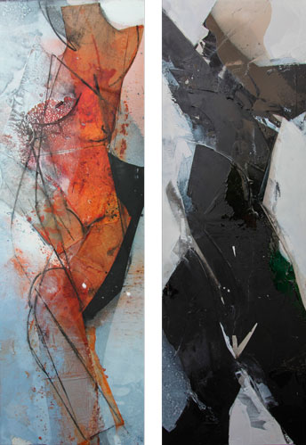

Details
Vernissage: Mittwoch, den 10. Dezember 2014
Eröffnung: Dr. Wolfgang Hilger
Die Ausstellung war bis Ende Februar 2015 nach Vereinbarung zugänglich.

Vernissage: Mittwoch, den 10. Dezember 2014
Eröffnung: Dr. Wolfgang Hilger
Die Ausstellung war bis Ende Februar 2015 nach Vereinbarung zugänglich.